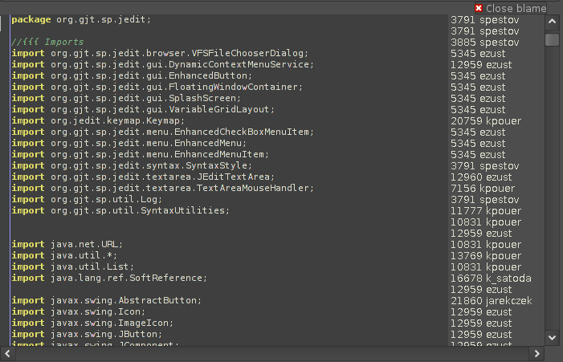

Blame Component
Introduction
The intent of this component is to show the results of the svn or git "blame"
commands. Here is what this component looks like when used by the SVN Plugin:

This component provides both the list on the right side of the text area and the
"close" button at the top. While the intent is for use by VCS providing "blame"-like
commands, this component could be uses for showing any sort of line based annotations.
Example Usage
This abbreviated example is adapted from the SVN Plugin's blame action. This
example assumes a few variables are in scope, view, textArea, and buffer.
class Runner extends SwingWorker < BlameModel , Object > {
@Override
public BlameModel doInBackground() {
// produce a BlameModel somehow...
return someBlameProvider.getBlame();
}
@Override
public boolean doCancel( boolean mayInterruptIfRunning ) {
boolean cancelled = super.cancel( mayInterruptIfRunning );
if ( cancelled ) {
// do the clean up as necessary
someBlameProvider.cancel();
}
else {
System.err.println("Unable to cancel.");
}
return cancelled;
}
@Override
protected void done() {
if ( isCancelled() ) {
return ;
}
try {
// here is where the Blame component is added to the text area
BlameModel model = get();
model.setTextArea( textArea );
BlamePane pane = new BlamePane( model );
// remove any previous blame display. This assumes there
// is a reference to the buffer to show the blame for.
Object old_blame = buffer.getProperty( "_old_blame_" );
if ( old_blame != null ) {
textArea.removeLeftOfScrollBar( ( JComponent ) old_blame );
Object old_closer = buffer.getProperty( "_old_closer_" );
textArea.removeTopComponent( ( JComponent ) old_closer );
}
// add the blame component to the right side of the text area,
// just left of the scrollbar.
textArea.addLeftOfScrollBar( pane );
// add a "close" button at the top of the text area to be
// able to remove the blame display
JComponent closer = pane.getCloser( getView() );
textArea.addTopComponent( closer );
// caret listener moves the highlight in the text area to
// correspond with the hightlight in the blame pane
textArea.addCaretListener( pane );
// store a reference to the blame display for future use
buffer.setProperty( "_old_blame_", pane );
buffer.setProperty( "_old_closer_", closer );
view.revalidate();
// might want to show a warning if the buffer has changed since
// the blame model was produced
if ( model.outOfDate() ) {
JOptionPane.showMessageDialog( getView(),
"File has local modifications, blame may not be correct.",
"Warning: Local Modifications",
JOptionPane.WARNING_MESSAGE );
}
}
catch ( Exception e ) {
// do the right thing
e.printStackTrace();
}
}
}
Runner runner = new Runner();
runner.execute();